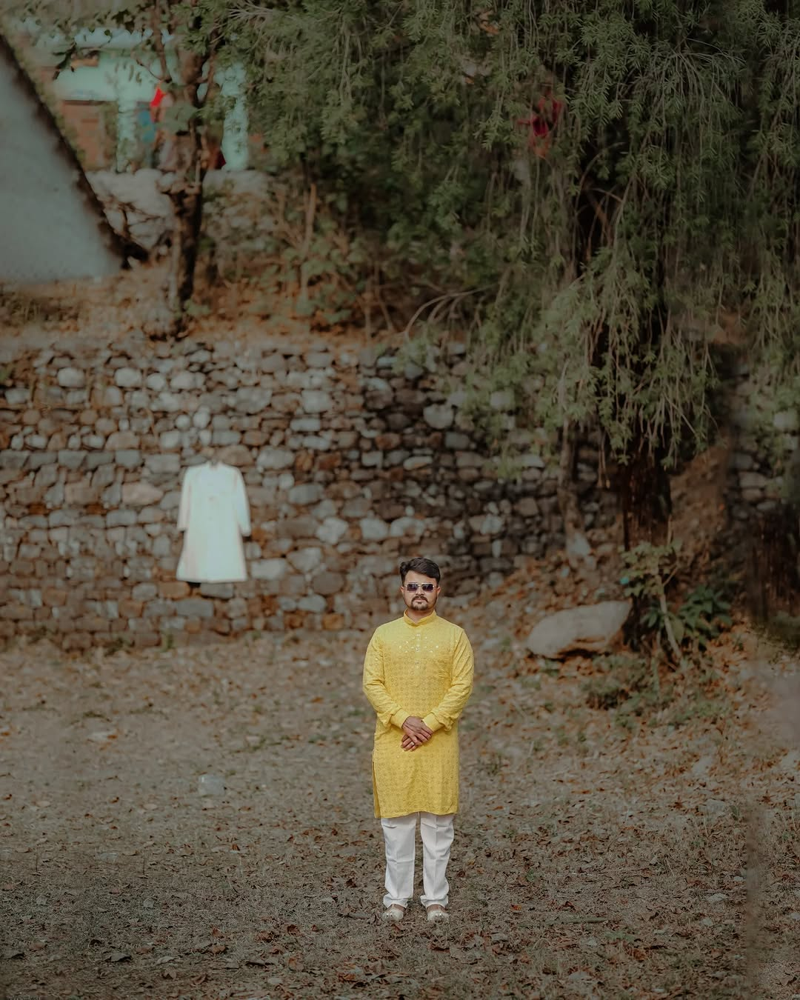

Beat synced performance cuts, B-roll flow, teaser reels, thumbnails and social exports for songs and artists.
Pahadi Video Editor
Pahadi songs, Himachali weddings and reels edited with cinematic taste.
For artists, families, creators and studios who need a local Himachal editing style: clean beat cuts, emotional wedding pacing, social reels, YouTube exports, natural skin tones, music sync and delivery-ready files.

Pahadi editing work
Haldi, mehndi, baraat, reception, couple reels, highlights and family moments edited with a natural local feel.
Short-form edits for Himachal creators, hotels, local businesses, travel pages and social campaigns.
No fake promises
Jamallta Films does not promise impossible delivery or artificial ranking tricks. The studio focuses on real editing work, public proof, clear communication and professional exports for clients in Himachal and across India.